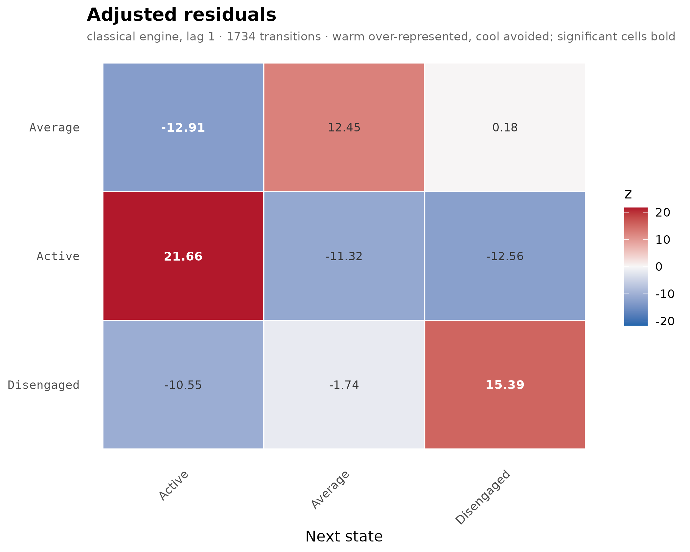
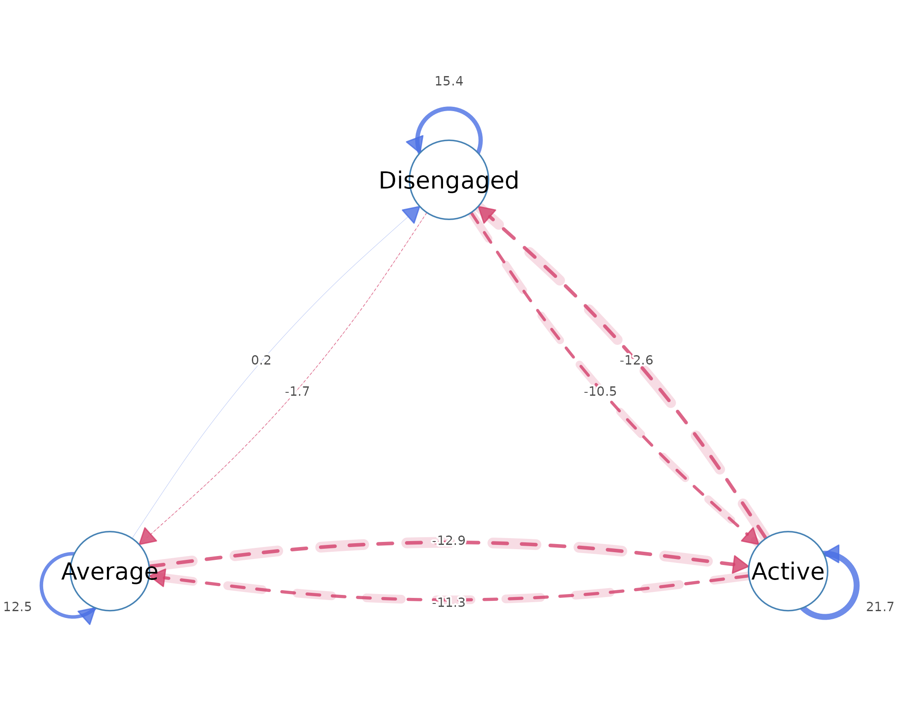
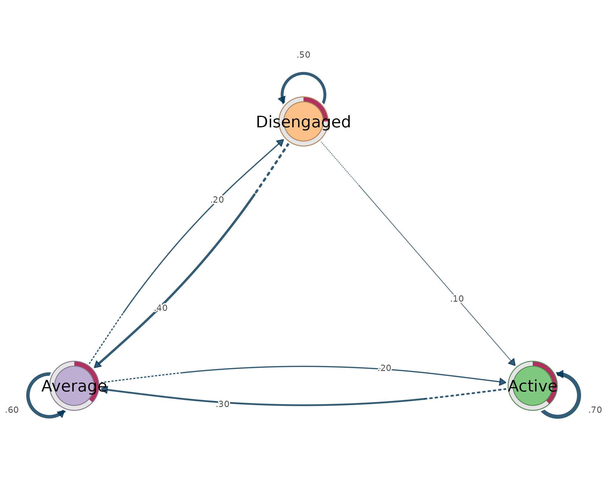
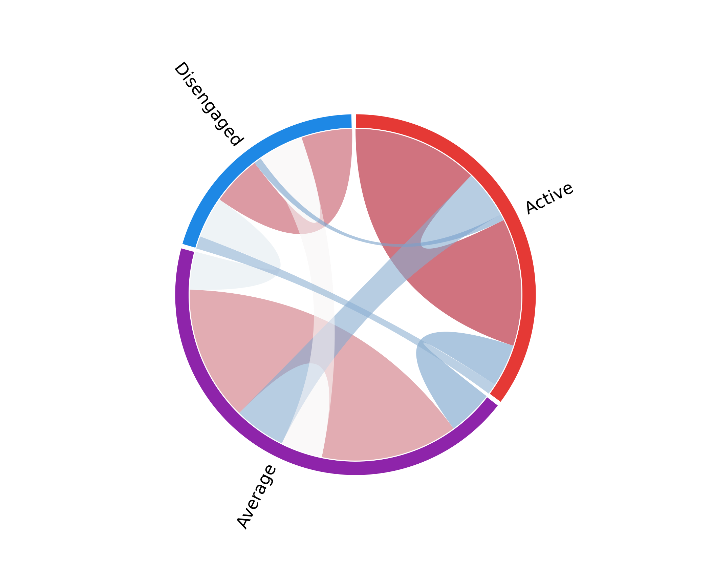
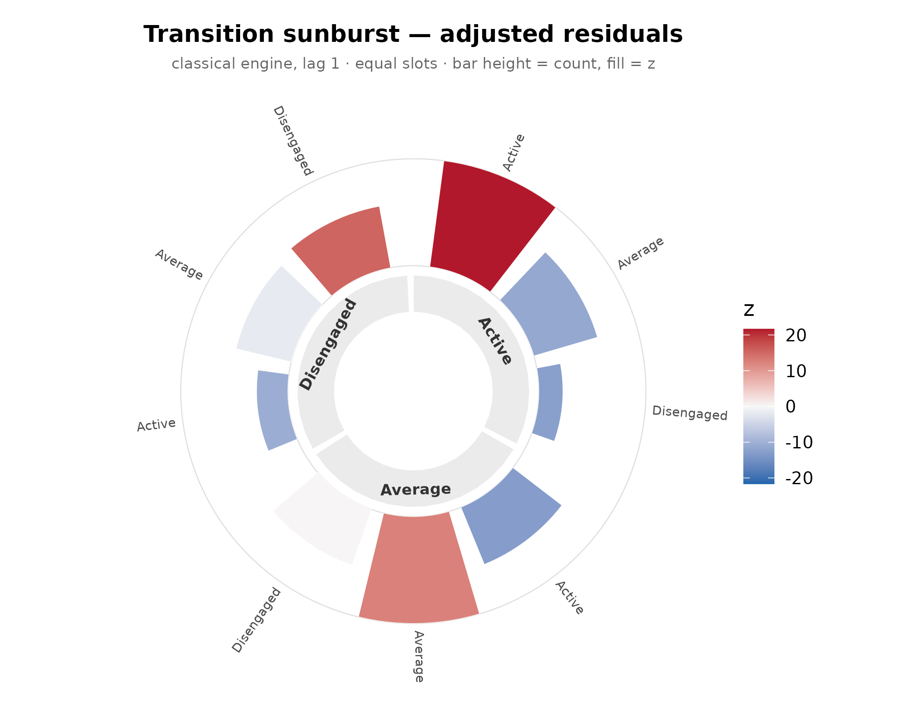
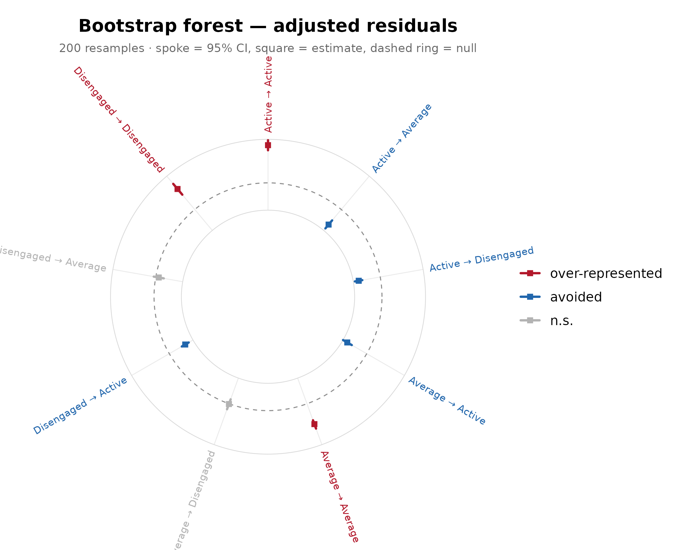
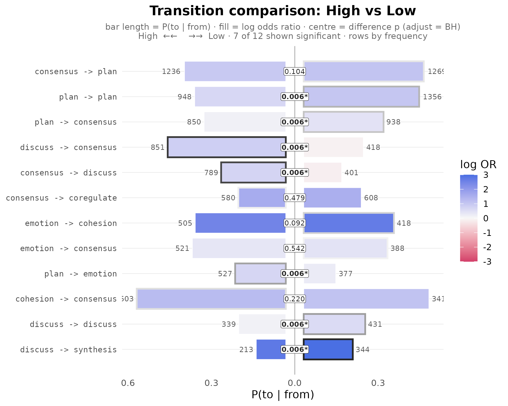
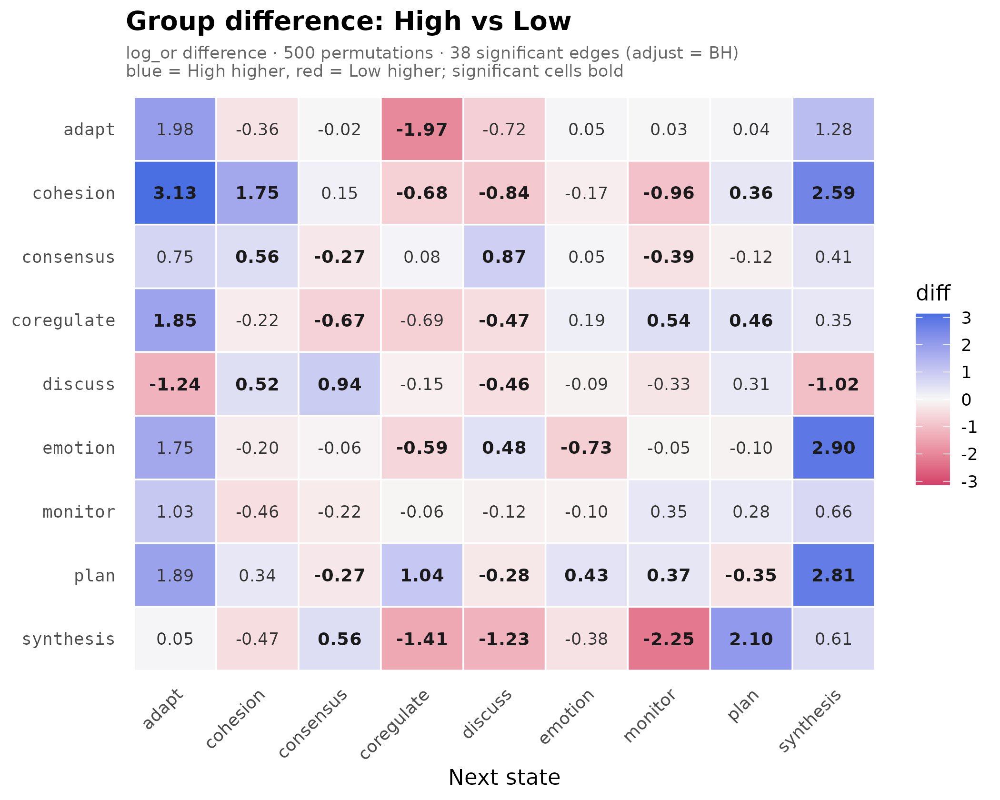

A complete workflow: from sequences to a group comparison
Source:vignettes/workflow.Rmd
workflow.RmdLag-sequential analysis (LSA) asks whether, given a state at one moment, another state follows it more or less often than chance. The method has a long history in the behavioural sciences, but applied work has often stopped at description – reading off observed transition rates – without the inferential machinery needed to establish that a pattern reflects the process rather than the particular sample.
lagdynamics implements LSA as a member of the Dynalytics
framework (Saqr, Lopez-Pernas, and Misiejuk, 2026), whose central tenet
is a scientific contract: every analytical claim must be
matched by evidence appropriate to its structure, scope, and complexity,
and estimation, validation, and interpretation are treated as one
inferential system rather than separate steps. Accordingly, in
lagdynamics each edge is a tested departure from
independence – the adjusted residual is a test statistic, not a
descriptive weight.
The package is built around a small set of design commitments:
-
Tidy. Every result is produced by a verb
(
transitions(),nodes(),tests(),initial(), …) that returns a one-row-per-observation data frame; the user never indexes into an object. -
Interoperable.
lsa()reads long event logs and common sequence objects with anactor/action/timegrammar, and exposes the fitted transition and initial probabilities for downstream network tooling. - Rigorous, following Dynalytics. The confirmatory testing battery is built in: analytic certainty and the bootstrap for edge-level uncertainty, split-half reliability for the whole network, case-dropping for stability, and permutation under exchangeability for group comparison.
- Expanded. Beyond the classical engine the package offers several model variants, multi-lag analysis, structural-zero constraints, and an analytic Bayesian certainty estimator.
-
Visual. A single
plot()verb renders the model as a residual heatmap, a residual network, a probability-weighted TNA transition network, a chord diagram, or a polar sunburst, alongside dedicated plots for uncertainty and for group differences. -
Group-aware. A grouping column yields one model per
group, and
compare_lsa()tests whether the groups differ by permutation.
The remainder of this vignette walks one analysis end to end on real bundled data, treating each step as one tier of the claim-to-evidence map: descriptive views support claims about which transitions exist; certainty intervals and bootstraps support claims about particular edges; split-half reliability supports claims about the reproducibility of the whole network; and permutation tests support claims that two groups differ.
The data: engagement trajectories
engagement is 138 students observed over 15 weekly time
points; each cell is that week’s engagement state - Active,
Average, or Disengaged. It is a wide matrix:
one sequence per row. This section anchors the scope of
every later claim: the units are students, the events are weekly
engagement states, and the possible states are known before the model is
fitted. In Dynalytics terms, this is the descriptive foundation on which
the evidential contract rests. Before asking whether an edge is
surprising or a group differs, we first make clear what process the
model is allowed to represent.
dim(engagement)
#> [1] 138 15
head(engagement)
#> 1 2 3 4 5 6
#> [1,] "Active" "Disengaged" "Disengaged" "Disengaged" "Active" "Active"
#> [2,] "Average" "Average" "Average" "Average" "Average" "Average"
#> [3,] "Average" "Active" "Active" "Active" "Active" "Active"
#> [4,] "Active" "Active" "Active" "Active" "Active" "Average"
#> [5,] "Active" "Active" "Active" "Average" "Active" "Average"
#> [6,] "Average" "Average" "Disengaged" "Average" "Disengaged" "Disengaged"
#> 7 8 9 10 11 12
#> [1,] "Active" "Active" "Average" "Active" "Average" "Active"
#> [2,] "Average" "Average" "Average" "Active" "Average" "Average"
#> [3,] "Active" "Active" "Active" "Average" "Active" "Active"
#> [4,] "Average" "Active" "Active" "Active" "Average" "Active"
#> [5,] "Active" "Active" "Active" "Disengaged" "Active" "Active"
#> [6,] "Average" "Average" "Average" "Disengaged" "Average" "Disengaged"
#> 13 14 15
#> [1,] NA NA NA
#> [2,] "Average" "Average" "Average"
#> [3,] "Active" "Active" "Active"
#> [4,] "Average" "Active" "Average"
#> [5,] "Active" "Average" "Average"
#> [6,] "Average" "Average" "Average"Fit
lsa() estimates the model in a single call. It tabulates
every state-to-state transition, derives the frequencies expected under
the independence (no-memory) model, and computes an adjusted
residual for each cell: a standardised measure of how far the
observed frequency departs from its expectation. The fitted object is
therefore a residual network – each edge is a tested deviation
from independence rather than a raw rate. This is the named-model
discipline of Dynalytics: the same sequences could be re-expressed as a
probability-weighted transition (TNA) network, but that is a distinct
model answering a distinct question – the typical next state rather than
the surprising one.
fit <- lsa(engagement)
fit
#> Lag Sequential Analysis — classical (lag 1, directed)
#> 3 states | 1734 transitions | 1870 events | 136 sequences
#> states: Active, Average, Disengaged
#> independence: G² = 618.3, df = 4, p <2e-16
#>
#> Significant transitions (p < 0.05): 7 of 9
#> strongest over-represented (of 3):
#> Active -> Active z = +21.7 ***
#> Disengaged -> Disengaged z = +15.4 ***
#> Average -> Average z = +12.5 ***
#>
#> Initial states:
#> Active 0.382 ████████████████████████
#> Average 0.368 ███████████████████████
#> Disengaged 0.250 ████████████████Read the fit
Every result is produced by a verb that returns a tidy data frame;
the object is never indexed directly. transitions() is the
primary accessor, and its arguments select the transitions of interest.
This step supports the most modest claim in the workflow – which
departures from chance are present in the fitted model. The evidence is
descriptive and edge-level, appropriate for reading the model but not
yet for claims about stability, replication, or group differences.
transitions(fit, significant = TRUE) # transitions beyond chance
#> from to lag count expected prob prob_col adj_res p
#> 1 Active Active 1 459 247 0.698 0.7051 21.7 4.60e-104
#> 2 Average Active 1 153 282 0.204 0.2350 -12.9 4.16e-38
#> 3 Disengaged Active 1 39 122 0.120 0.0599 -10.5 5.11e-26
#> 4 Active Average 1 176 290 0.267 0.2307 -11.3 1.06e-29
#> 5 Average Average 1 458 330 0.610 0.6003 12.5 1.35e-35
#> 6 Active Disengaged 1 23 121 0.035 0.0719 -12.6 3.64e-36
#> 7 Disengaged Disengaged 1 157 60 0.483 0.4906 15.4 1.90e-53
#> yules_q kappa kappa_z kappa_p lift sign significant
#> 1 0.828 0.444 19.19 4.68e-82 1.858 over TRUE
#> 2 -0.601 -0.499 -14.70 6.81e-49 0.543 under TRUE
#> 3 -0.698 -0.707 -11.46 2.03e-30 0.320 under TRUE
#> 4 -0.534 -0.424 -12.48 9.39e-36 0.608 under TRUE
#> 5 0.553 0.227 9.83 7.97e-23 1.386 over TRUE
#> 6 -0.826 -0.827 -13.41 5.14e-41 0.189 under TRUE
#> 7 0.754 0.314 13.56 7.34e-42 2.618 over TRUEA positive residual means the transition happens more than chance (over-represented); a negative one means it is avoided. The other results follow the same one-verb pattern. The companion tables provide the base rates, node volumes, starting states, and tablewise tests that keep interpretation grounded in the observed process. They help prevent an edge from being read in isolation, which is part of the Dynalytics idea that estimation and interpretation must stay connected.
nodes(fit) # per-state incoming / outgoing volume
#> state outgoing incoming
#> 1 Active 658 651
#> 2 Average 751 763
#> 3 Disengaged 325 320
tests(fit) # tablewise independence tests
#> test statistic df p
#> 1 lrx2 618 4 1.69e-132
#> 2 x2 629 4 7.41e-135
initial(fit) # where sequences start
#> state init_prob
#> 1 Active 0.382
#> 2 Average 0.368
#> 3 Disengaged 0.250Plot - the full gallery
Every view is produced by plot(fit, type = ), and each
answers a different descriptive question. Visualisation is the first
evidence tier: it can support claims about pattern, concentration, and
direction, but it is not confirmatory evidence about uncertainty or
group differences.
Residual heatmap
This is the default view. Rows are the current state, columns the next, and colour is the adjusted residual, so the heatmap displays the departure-from-chance model directly. Strong colours mark transitions whose observed counts sit far from the independence expectation, which makes the view well matched to descriptive claims about where the process departs from chance.
plot(fit) # type = "heatmap"
Residual network
The same residuals as a directed graph. The convention matches the wider Transition Network Analysis (TNA) style: blue = more than chance (solid edges), red = less (dashed, with a soft halo). It shows which transitions are surprising. The graph keeps the residual scale but makes direction and connectedness easier to read. It is still the RESIDUAL model: blue and red edges are not simply popular or unpopular transitions, but tested deviations from what independence would predict.
plot(fit, type = "network")
Transition network (a TNA model)
Weighting the edges by probability instead yields the familiar
transition network, drawn in the Transition Network Analysis (TNA) style
by cograph::splot(): coloured nodes, a per-node
initial-probability ring, and weighted directed edges. The named model
changes even though the underlying sequences do not. A transition (TNA)
network is a first-order Markov model whose edge weights are conditional
probabilities; it is the appropriate display when the claim concerns the
typical next state, whereas the residual network is appropriate when the
claim concerns a tested departure from chance.
plot(fit, type = "network", weights = "prob")
Chord and sunburst
Two further views connect local edges to the overall movement of the process: a chord diagram of the transition flow, and a polar sunburst of each state’s outgoing distribution. Both are descriptive - for example, they make clear when one state distributes its outgoing transitions broadly while another concentrates them in a single destination. They do not replace the uncertainty checks that follow; they make the fitted structure easier to inspect before stronger claims are made.
plot(fit, type = "chord")
plot(fit, type = "sunburst")
Verify and validate
To validate the trustworthiness of an estimated edge, its uncertainty
must be quantified. This is where the Dynalytics contract becomes
explicit: a claim about a specific edge requires edge-level evidence,
because a single observed value is weaker support than a measure of how
much that value could vary. lagdynamics provides two
complementary procedures, both returning a tidy object.
certainty_lsa() is the analytic procedure. It places a
Dirichlet-Multinomial posterior on each state’s outgoing transitions,
which gives an exact credible interval for every transition probability
in closed form, without resampling. The interval states directly how
precisely the data pin down each edge, and so provides the evidence
appropriate to a claim about a specific transition.
certainty_lsa(fit)
#> <lsa_certainty> (analytic Dirichlet-Multinomial)
#> engine: classical
#> prior: Dirichlet(0.50)
#> CI level: 95% | inference: stability
#> certain edges: 7 of 9
as.data.frame(certainty_lsa(fit)) |> head(4)
#> from to observed prob_observed prob_mean prob_se prob_ci_low
#> 1 Active Active 459 0.698 0.697 0.0179 0.6611
#> 2 Average Active 153 0.204 0.204 0.0147 0.1760
#> 3 Disengaged Active 39 0.120 0.121 0.0180 0.0879
#> 4 Active Average 176 0.267 0.268 0.0172 0.2345
#> prob_ci_high p_value stable adj_res_observed adj_res_stable
#> 1 0.731 5.56e-20 TRUE 21.7 TRUE
#> 2 0.233 6.06e-04 TRUE -12.9 TRUE
#> 3 0.158 9.45e-02 FALSE -10.5 FALSE
#> 4 0.302 1.21e-04 TRUE -11.3 TRUEbootstrap_lsa() is the resampling counterpart. It
resamples whole sequences with replacement, re-estimates the model on
each resample, and summarises how much each edge varies. The two
procedures agree when the population is homogeneous; the bootstrap is
preferred when it is a mixture, because resampling whole sequences
preserves the within-sequence dependence that the analytic model treats
as independent. The forest plot below shows each edge’s interval. Both
procedures supply the edge-level evidence a claim about a single
transition requires: a narrow, stable interval indicates the transition
is not an artefact of the particular sample.
as.data.frame(bootstrap_lsa(fit, R = 200)) |> head(4)
#> from to observed count_mean count_se count_ci_low count_ci_high
#> 1 Active Active 459 466.9 53.63 369 566
#> 2 Average Active 153 152.7 15.24 127 183
#> 3 Disengaged Active 39 38.6 6.37 26 51
#> 4 Active Average 176 176.2 16.06 148 210
#> adj_res_observed adj_res_mean adj_res_se adj_res_ci_low adj_res_ci_high
#> 1 21.7 21.7 1.58 18.1 24.28
#> 2 -12.9 -13.1 1.49 -15.8 -9.98
#> 3 -10.5 -10.5 1.27 -12.8 -8.09
#> 4 -11.3 -11.4 1.54 -14.3 -8.16
#> adj_res_p_boot adj_res_stable prob_observed prob_mean prob_ci_low
#> 1 0 TRUE 0.698 0.700 0.6388
#> 2 0 TRUE 0.204 0.205 0.1674
#> 3 0 TRUE 0.120 0.122 0.0856
#> 4 0 TRUE 0.267 0.266 0.2184
#> prob_ci_high yules_q_observed yules_q_mean yules_q_ci_low yules_q_ci_high
#> 1 0.751 0.828 0.827 0.754 0.879
#> 2 0.249 -0.601 -0.605 -0.695 -0.487
#> 3 0.159 -0.698 -0.696 -0.800 -0.581
#> 4 0.323 -0.534 -0.537 -0.633 -0.406
plot(bootstrap_lsa(fit, R = 200)) # circular forest of edge CIs
reliability_lsa() raises the claim from a single edge to
the whole network. It repeatedly splits the sequences into two halves,
estimates a model on each half, and correlates the two edge-weight
vectors. A high average correlation indicates that the network is
reproducible within the sample; a low one indicates that the structure
is sample-dependent and should be interpreted with caution. This
evidence matches a claim about the network as a whole rather than about
any single edge.
reliability_lsa(fit, R = 30)
#> <lsa_reliability>
#> engine: classical
#> replicates: 30
#> weights: prob
#> method: pearson
#> n sequences: 136
#> split-half r: 0.969 (sd = 0.023)
#> 95% CI: [0.924, 0.996]Starting from a raw event log
engagement arrived as ready-made sequences. Real data is
often a long event log instead - one row per event.
lsa() sequences it on the fly with an actor /
action / time grammar. This step shows that
the same inferential chain can begin from raw process traces rather than
from an already assembled sequence matrix. The data format changes, but
the contract does not: define the actors, events, and ordering rule
before estimating a model from them.
The bundled group_regulation_long is exactly that: 2,000
students, each a stream of timestamped regulation actions, with a
recorded achievement group. The grouping variable will matter later, but
it is first treated as metadata attached to recovered sequences. Keeping
sequencing and grouping explicit helps preserve the units that later
resampling and permutation procedures require.
head(group_regulation_long)
#> Actor Achiever Group Course Time Action
#> 1 1 High 1 A 2025-01-01 08:27:07 cohesion
#> 2 1 High 1 A 2025-01-01 08:35:20 consensus
#> 3 1 High 1 A 2025-01-01 08:42:18 discuss
#> 4 1 High 1 A 2025-01-01 08:50:00 synthesis
#> 5 1 High 1 A 2025-01-01 08:52:25 adapt
#> 6 1 High 1 A 2025-01-01 08:57:31 consensusA single call converts the log into a fitted model:
lsa() groups events by actor, orders them by time, splits
sessions on long gaps, and fits. Those operations are not clerical
details; they define the empirical process to which the residual test is
applied. Once the log has been converted to ordered transitions, the
fitted edges again represent departures from independence in that
recovered sequence process.
fit_log <- lsa(group_regulation_long, actor = "Actor",
action = "Action", time = "Time")
fit_log
#> Lag Sequential Analysis — classical (lag 1, directed)
#> 9 states | 25533 transitions | 27533 events | 2000 sequences
#> states: adapt, cohesion, consensus, coregulate, discuss, emotion, monitor, plan, synthesis
#> independence: G² = 13203.8, df = 64, p <2e-16
#>
#> Significant transitions (p < 0.05): 72 of 81
#> strongest over-represented (of 23):
#> emotion -> cohesion z = +58.2 ***
#> discuss -> synthesis z = +48.0 ***
#> synthesis -> adapt z = +38.8 ***
#> consensus -> coregulate z = +35.3 ***
#> consensus -> plan z = +32.6 ***
#> ... and 18 more
#>
#> Initial states:
#> consensus 0.214 ████████████████████████
#> plan 0.204 ███████████████████████
#> discuss 0.175 ████████████████████
#> emotion 0.151 █████████████████
#> monitor 0.144 ████████████████
#> cohesion 0.060 ███████
#> synthesis 0.019 ██
#> coregulate 0.019 ██
#> adapt 0.011 █The fitted model separates the estimation step from the rendering and analysis layers. The same empirical object can be read as a residual lag-sequential model when testing departures from chance, or its fitted transition and initial probabilities can be passed into transition-network tooling when the question is about probability-weighted flow.
transition_probabilities(fit_log) # P(to | from) transition matrix
#> adapt cohesion consensus coregulate discuss emotion monitor
#> adapt 0.000000 0.2731 0.477 0.0216 0.0589 0.1198 0.0334
#> cohesion 0.002950 0.0271 0.498 0.1192 0.0596 0.1156 0.0330
#> consensus 0.004740 0.0149 0.082 0.1877 0.1880 0.0727 0.0466
#> coregulate 0.016244 0.0360 0.135 0.0234 0.2736 0.1721 0.0863
#> discuss 0.071374 0.0476 0.321 0.0843 0.1949 0.1058 0.0223
#> emotion 0.002467 0.3253 0.320 0.0342 0.1019 0.0768 0.0363
#> monitor 0.011165 0.0558 0.159 0.0579 0.3754 0.0907 0.0181
#> plan 0.000975 0.0252 0.290 0.0172 0.0679 0.1468 0.0755
#> synthesis 0.234663 0.0337 0.466 0.0445 0.0629 0.0706 0.0123
#> plan synthesis
#> adapt 0.0157 0.00000
#> cohesion 0.1410 0.00354
#> consensus 0.3958 0.00758
#> coregulate 0.2391 0.01878
#> discuss 0.0116 0.14098
#> emotion 0.0998 0.00282
#> monitor 0.2156 0.01605
#> plan 0.3742 0.00179
#> synthesis 0.0752 0.00000
initial(fit_log) # initial-state probabilities
#> state init_prob
#> 1 adapt 0.0115
#> 2 cohesion 0.0605
#> 3 consensus 0.2140
#> 4 coregulate 0.0190
#> 5 discuss 0.1755
#> 6 emotion 0.1515
#> 7 monitor 0.1440
#> 8 plan 0.2045
#> 9 synthesis 0.0195Group
To compare achievement groups, name the grouping
column in the same call -
group = "Achiever". lsa() derives one label
per recovered sequence (the column must be fixed within each actor), so
there is no manual splitting or relabelling. Grouped fitting estimates
one lag-sequential model per group under the same data grammar, which
makes the models comparable. At this point the claim is still
descriptive: each group has its own fitted residual structure.
gfit <- lsa(group_regulation_long, actor = "Actor", action = "Action",
time = "Time", group = "Achiever")
gfit
#> <lsa_group>
#> engine: classical
#> states: 9 (adapt, cohesion, consensus, coregulate, discuss, emotion, monitor, plan, synthesis)
#> groups: 2
#> - High: 1000 sequences
#> - Low: 1000 sequencesEvery verb now returns grouped, tidy results with a leading
group column. This makes it easy to inspect apparent
differences without turning visual contrast into inference. Side-by-side
networks almost always differ somewhere, so the next step asks whether
those differences are larger than expected under a valid null.
transitions(gfit, significant = TRUE) |> head(4)
#> group from to lag count expected prob prob_col adj_res p
#> 1 High consensus adapt 1 14 38.1 0.00413 0.0979 -4.59 4.45e-06
#> 2 High coregulate adapt 1 20 10.0 0.02237 0.1399 3.27 1.06e-03
#> 3 High discuss adapt 1 48 22.5 0.02396 0.3357 5.88 4.00e-09
#> 4 High emotion adapt 1 5 17.4 0.00323 0.0350 -3.19 1.40e-03
#> yules_q kappa kappa_z kappa_p lift sign significant
#> 1 -0.544 -0.6606 -4.98 6.36e-07 0.367 under TRUE
#> 2 0.371 0.0636 2.90 3.68e-03 1.990 over TRUE
#> 3 0.466 0.1803 5.21 1.86e-07 2.132 over TRUE
#> 4 -0.589 -0.7375 -3.46 5.48e-04 0.287 under TRUECompare the groups
compare_lsa() tests whether the two groups have a
different transition structure. It permutes the group labels and
compares an N-invariant effect size (the log-odds ratio), returning a
per-edge table together with a single omnibus test of whether the groups
differ at all. This is the evidence tier appropriate to a comparative
claim. Under the null hypothesis of no group difference, group labels
are exchangeable, so shuffling them builds a reference distribution for
any chosen difference function. The observed edge differences and the
omnibus statistic are then judged against that permutation distribution
rather than against the visual fact that two separately estimated
networks are not identical.
cmp <- compare_lsa(gfit, R = 500, adjust = "BH")
cmp
#> <lsa_comparison>
#> groups: High vs Low
#> measure: log_or difference (High - Low)
#> R: 500 label permutations
#> edges: 38 significant of 78 tested (adjust = BH)
#> omnibus: statistic = 79.48, p = 0.001996The back-to-back barrel displays the result: each group’s bar runs to one side, the higher group’s bar is bordered (darker for a larger difference), and the centre chip carries the difference p-value. The plot is a compact rendering of the permutation result, not a substitute for it: the bars show direction and magnitude, while the centre chip records whether the observed difference is large relative to the differences produced by label shuffling under exchangeability.
plot(cmp)
The same comparison as a full-grid difference heatmap. Use it when the claim is easier to assess as a matrix of source-by-target contrasts than as paired bars. The underlying evidence remains the same permutation comparison; only the visual summary changes.
plot(cmp, style = "heatmap")
In short
The compact recipe below is the same workflow expressed as a checklist: estimate the named model, read and visualise its descriptive structure, validate edge-level uncertainty, move to logs when needed, preserve group labels at the sequence level, and use permutation for group comparisons. Each step escalates the evidence only when the claim being made also escalates.
fit <- lsa(engagement) # 1. fit ready sequences
transitions(fit, significant = TRUE) # 2. read (one verb per result)
plot(fit) # 3. plot: heatmap / network /
plot(fit, type = "network", weights = "prob") # chord / sunburst, TNA network
certainty_lsa(fit); bootstrap_lsa(fit) # 4. validate (analytic + resampling)
log <- group_regulation_long # 5. or start from a raw log
fit <- lsa(log, actor =, action =, time =) # actor/action/time grammar, one call
gfit <- lsa(log, actor =, action =, time =, group = "Achiever") # 6. group by a column
compare_lsa(gfit) # 7. compare + plot(cmp)Taken together, the workflow is a complete inferential chain. Descriptive claims receive descriptive support, edge claims receive edge-level uncertainty, whole-network claims receive reproducibility evidence, and group-difference claims receive permutation evidence under exchangeability. That is the Dynalytics scientific contract in practice: every interpretation is tied to the evidence tier that can actually support it.